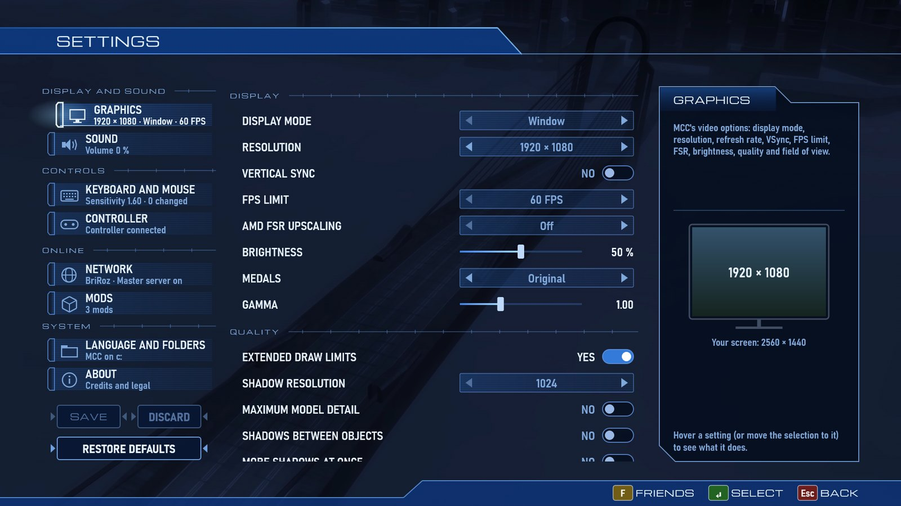

PROJECT
GRAVEMIND
The Halo 2 from your MCC, outside MCC. With matchmaking, the original ranks, dedicated servers and up to 24 players.El Halo 2 de tu MCC, fuera de MCC. Con matchmaking, los rangos originales, servidores dedicados y hasta 24 jugadores.
What is itQué es
A launcher that runs MCC's Halo 2 on its own. It uses your Steam copy, nothing gets installed and your MCC stays as it is. Same idea as Project Reclaimer, for Halo 2.Un lanzador que abre el Halo 2 de MCC por su cuenta. Usa tu copia de Steam, no instala nada y tu MCC queda igual. La misma idea que Project Reclaimer, pero para Halo 2.
GRAVEMIND LIVEGRAVEMIND LIVE
Halo 2's matchmaking playlists, party and friends list.Las listas de matchmaking de Halo 2, party y lista de amigos.
Find gamesBuscar partidas
Every open game and server, with ping, filters and favourites.Todas las partidas y servidores abiertos, con ping, filtros y favoritas.
Steam WorkshopSteam Workshop
Join a game on a mod you don't have and it downloads.Si entras a una partida con un mod que no tienes, se descarga.


